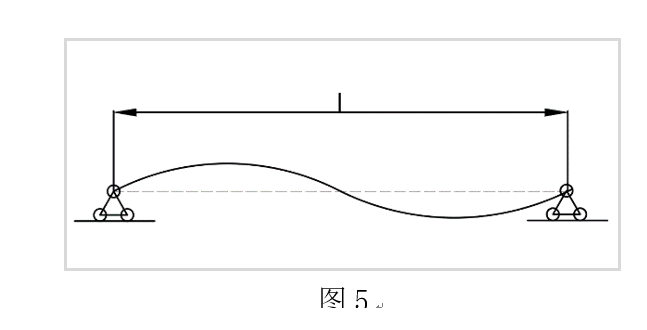
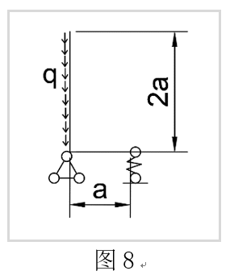
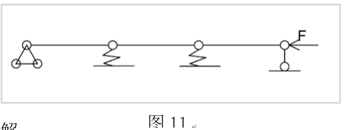

材料力学-压杆稳定
本文最后更新于：1 年前
引言
大学本科土木工程的材料力学和结构力学课程中提到了两类结构失稳问题。材料力学中探究长细杆在轴向压力和可能的垂直轴向压力的共同作用下，构件沿其长度方向发生侧向挠度的情况，该侧向挠度的发生是由于杆件柔度较大，当发生挠度时杆件中主应力尚未达到破坏极限，杆件产生的内力和外部荷载在杆件任意位置处于静力学平衡状态。结构力学中引入了非完善体系的失稳状态，根据大小挠度理论，体系在外荷载小于一定范围时，其发生的形变与荷载成正相关，且体系的静力学特征处于平衡状态；当荷载超过某一极限时，荷载与形变的关系发生显著变化，此时发生体系失稳。由于两类失稳状态分类在两门不同的学科中，使用过程中，对两种原理的比较和应用存在不便。笔者将两类失稳的原理推导和静力学分析进行整合，导出两种失稳状态下的力学特点，并将归纳整理得到的性质用于解决实际问题，并给出实际问题的解决过程。
1细长杆件的失稳：分支失稳
由平时的生活经验：假设我们有一根长的杆件，如图1。若在杆的两端施加轴向压力，若压力足够大可能发生两种情况：
受压破坏：杆中截面应力超过材料的最大许用应力$ [\sigma ] $，材料发生破坏。
失稳破坏：杆件的长细比过大使得杆件在两端压力作用下发生弯曲失稳，如图2。此时发生侧向挠度，可认为杆件失效。
根据材料力学的正截面材料破坏条件：$ [\sigma ] < {\sigma _{}} = \frac{F}{A} $
其中：$F$为施加在杆件正截面的轴力；
$ A $为构件的横截面积（假定该杆件横截面处处相等） 设当$ F = {F_{\max }}$时，$\frac{F}{A} = [\sigma ] $。 再对失稳条件进行分析： 由正截面的微元曲率分析可得挠度与弯矩的关系公式：$ - \frac{{M(x)}}{{EI}} = \frac{{{d^2}w(x)}}{{d{x^2}}} $其中$ M(x)$为弯矩函数，$EI$为材料刚度，$w(x) $为挠度函数。
由图3
得出该杆件的力矩平衡方程：（不考虑水平力）$ \frac{{{d^2}w}}{{d{x^2}}} + \frac{F}{{EI}}w = 0 \text{ ①} $
若杆端存在水平力时，平衡方程变为： $\frac{{{d^2}w}}{{d{x^2}}} + \frac{F}{{EI}}w = \frac{{{F_R}(l - x)}}{{EI}}\text{②} $
该方程有通解：$ w*(x) = A\sin \omega x + B\cos \omega x $
对于式②
$ w(x) = \frac{{{F_R}}}{F}(l - x) + w*(x) $令$ k = \sqrt {\frac{F}{{EI}}} $代入原方程得：
$ w*(x) = A\sin kx + B\cos kx $ $ w'(x) = Ak\cos kx - Bk\sin kx - \frac{{{F_R}}}{F} $ $ {w^{(2)}}(x) = - A{k^2}\sin kx - B{k^2}\cos kx $此时的通解为自由条件下杆的挠曲平衡方程，而实际情况，往往会有支座进行固定，主要的支座类型有铰支座和固定支座。固定支座和铰支座在计算时得主要区别在于：固定支座处的挠度和转角均等于零；铰支座处挠度为零，转角不一定为零。因此此处将固定支座和铰支座相互搭配形成四种情况分别就其不同的边界条件进行讨论：
1.1失稳状态公式导出
两端铰支：示意见图4，该支座类型没有非轴向力。
支座处不提供弯矩，且支座两端均无竖直方向的支座反力，即杆中不存在竖直方向的力产生弯矩。
因此只需要将边界条件$ {w^{(2)}}(0) = 0 $带入原方程中得：
$ {w^{(2)}}(0) = - A{k^2}\sin k*0 + B{k^2}\cos k*0 = 0 $=> $ B = 0 $
同理 $ {w^{(2)}}(l) = 0 $
得：$ A\sin kl \to 0$ => $kl = n\pi $ 由
得到杆件失稳的极限平衡条件。
平衡方程中存在整数数列n，n在这里指的是挠度形式，如图5

图5展示了$ n = 2 $当时的极限状态。
一端固定：示意见图6，该支座类型没有非轴向力。
因为发生弯曲变形后固定端会存在弯矩$ {w^{(2)}}(0) \ne 0$，但是固定端处的转角为零，即$w'(0) = 0$。即：$w'(0) = Ak\cos k*0 - Bk\sin k*0 = Ak = 0 $
又$ {w^{(2)}}(l) = 0$ => $kl = \frac{{(2n + 1)\pi }}{2} $
n为整数数列
令$ m = \frac{{2n + 1}}{2}$，$kl = m\pi = > {F_{cr}} = \frac{{{m^2}{\pi ^2}EI}}{{{l^2}}} $
一阶失稳时，此时$ m = \frac{1}{2}$，${F_{cr}} = \frac{{{\pi ^2}EI}}{{{{({\rm{2}}l)}^2}}} $
两端固定：该支座类型没有非轴向力。
同上$ w'(0) = 0$ => $A = 0 $
又因为两端固定对称，且有：$ w(0) = w(l) $
即：$ B\cos k*0 = B\cos k*l $
一端固定一端铰接：见图7
边界条件$ w(0) = 0$，支座提供得水平力不一定为零，代入式②，得：$B + \frac{{{F_R}}}{F}l = 0 $
又$ w'(0) = 0$ => $Ak = \frac{{{F_R}}}{F}$，且$w(l) = 0$ => $A\sin kl + B\cos kl = 0 $
有：$ B + Akl = 0$，因为不全为零，即$A \ne 0,B \ne 0 $
联立两式得：$ \tan kl = kl $
解得：$ kl = 4.49 $
因为
1.2四种失稳破坏条件的通用公式
总结以上四个失稳极限条件得到，在不同情况下杆件极限承载力计算时采用的实际计算长度只与两端的支座形式有关。引入系数描述不同支座特征的计算长度折算系数。得出一般公式：
$ {F_{cr}} = \frac{{{\pi ^2}EI}}{{{{(\mu l)}^2}}} $不同支座类型对应的折算系数如下表： | | | | | | | :---: | :---: | :---: | :---: | :---: | | 支座类型 | 两端铰支 | 一端固定 | 两端铰支 | 一端较支一端固定 | | μ | 1 | 2 | 0.5 | 0.7 | ### 1.3受压破坏和失稳破坏的极限条件 由材料力学的初步分析结果得：杆件有两种破坏形式，一是受压破坏，二为失稳破坏。这两种破坏形式在所需得极限作用计算方法不同，所以对于同一根杆件其受压破坏极限和失稳极限也不同，我们需要找一种方法以衡量在实际工程中，该杆件在受到足够大得轴向作用时是先发生失稳还是正截面直接达到正截面承载极限破坏。 根据$\left\{ {\begin{array}{*{20}{c}} {{F_{\max }} = [\sigma ]A}\\ {{F_{cr}} = \frac{{{\pi ^2}EI}}{{{{(\mu l)}^2}}}} \end{array}} \right.$当两个极限相等时 得出： $ \frac{{{{(\mu l)}^2}}}{{\frac{I}{A}}} = \frac{{{\pi ^2}E}}{{[\sigma ]}} \text{③} $其中，$ [\sigma ] $与所计算的材料有关；
$ I$和$A$与截面的形式有关，可以用来描述截面在某一方向上的力学特性。令，$i = \sqrt {\frac{I}{A}} $,③式变为${(\frac{{\mu l}}{i})^2} = \frac{{{\pi ^2}E}}{{[\sigma ]}} $该式的意义为当杆件的计算长度与截面的力学特性比值等于右边时，杆件在受到轴向荷载时正截面破坏和失稳破坏会同时发生。当增大杆件的计算长度时，其截面保持不变，由$ {F_{cr}}$计算公式，{F_{cr}},${F_{cr}} $减小，此时失稳先发生。即当截面一定时，失稳与正截面破坏的先发生与否与杆件的计算长度有关。
定义$ \lambda = \frac{{\mu l}}{i}$作为杆件失稳发生条件的判断系数，当${\lambda ^2} > \frac{{{\pi ^2}E}}{{[\sigma ]}} $
截面先发生失稳破坏；相等时两种破坏理论上同时发生。
2019周培源力学竞赛失稳条件题解
如题：弹性软基体中有一细长等截面 梁，弯曲刚度EI，梁受轴向压缩。
(1) 若将弹性基体等效为分布弹簧，其刚度为K
(弹性基体对梁单位长度上产生单位挠度时的反力)，
试根据图建立分析该长梁失稳的平衡微分方程；
(2) 假设失稳模式为$ w = Asin\frac{{2\pi }}{\lambda }x$，试求梁发生失稳时的临界载荷和临界失稳波长。${\lambda _{cr}} $
解：式①的平衡方程实质上是对杆件的力矩平衡方程，题设中所给的弹簧刚度K可求解竖向力，由于杆件受压发生挠度后在杆件任意截面会对应有相应转角，同上面压杆稳定公式推导类似，对杆件进行弯矩平衡。
杆长为$ l$，设从左至右的距离为$x $，则：
杆件本身产生挠度在$ x$处引起的弯矩：$ - EI\frac{{{d^2}w}}{{d{x^2}}}$,外力在$x$截面处产生的弯矩：$Fw(x)$，弹簧弹力在处引起的截面弯矩：$\int\limits_0^l {2Kw(x)(l - x)dx} $。
得出平衡方程：
=>
$$ EI\frac{{{d^3}w}}{{d{x^3}}} + F\sin \frac{{dw}}{{dx}} + 2Kw(x)dx = 0 $$
由挠度是无穷小量，且等式两边消去，得：
$ EI\frac{{{d^4}w}}{{d{x^4}}} + F\frac{{{d^2}w}}{{d{x^2}}} + 2Kw(x) = 0 $设方程通解：$ w*(x) = A\sin kx + B\cos kx $
原式：
由题可得：$ A,B $不同时为0
所以：$ EI{k^4} - F{k^2} + 2K = 0 $
解得：$ {k^2} = \frac{{F \pm \sqrt {{F^2} - 8KEI} }}{{2EI}} $，分析得：当：
$ {F^2} > 8KEI $杆件发生失稳，且有4钟振型
$ {F^2} = 8KEI $杆件处于失稳极限状态
$ {F^2} < 8KEI $无实数解，杆件不失稳
根据极限条件得：$ {F_{cr}} = \sqrt {8EIK} $，此时
波长：
2非完善体系中的失稳
相比于材料力学的关于材料本身的力矩平衡方程，作为一个体系，其约束不完整或构件在加载一开始就呈现出变形状态，该类体系称为非完善体系。非完善压杆在加载一开始就处于变形平衡状态。按照最小挠度理论，当荷载增加到一定程度时，体系得位移会趋于无穷大；按照大挠度理论，体系受到的荷载达到一定程度后会发生荷载不变甚至减小，位移仍在增加的情况。该极限点则为极限失稳点。该失稳形态称为极值点失稳，极值点对于的荷载最大值称为临界荷载。简单示例如图8

用静力学方法解决这类题型的关键是分析体系的自由度——按照节点特性找到所有对指定节点的作用效果——根据作用效果列出力矩平衡方程。
应用静力学方法的基本原理是将体系的位移看作线性变形。即认为变形和荷载呈线性关系。在进行相关参数计算时忽略体系中已经存在的位移，仍按照其变形之前的体系参数进行计算。该计算结果由于体系变形后相关参数较其变形前会发生改变，因此计算出的结果为近似精确解。该计算方法在结构力学中称为线性分析。同时该方法适用荷载叠加原理。
该问题中解决的核心思想为将体系看作通过约束单个结构得到的约束体系，约束体系发生小位移，此时作用在体系上的外荷载和体系中由于位移而产生的约束力在发生位移的条件下处于静力学平衡状态。即体系中所有的静力特征对该体系的所有作用的总和平衡。
本文通过对单自由度体系，有限自由度体系，和无限自由度体系分别进行分析，并进行计算，以得到相关问题的一般解法。
2.1单自由度体系分析
如图9，各杆$ EI = \infty $，在体系的最上端作用一个力$F$，弹簧弹性系数为$k$，求解当体系失稳时的极限荷载$F_{cr} $。

解：
由题意可得：该体系的自由度为1。该体系中有两个力未知，其一是带求的极限荷载F，第二是下部的铰支座提供的向上的支撑力Q。
绘制虚位移示意图：如图10。假设A点侧移距离为y。由于体系中含有两个未知数F、Q，所以对A，B点分别取矩：
最后解得：$ {F_{cr}} = \frac{{(3a + 4b)kb}}{{2a + 3b}} $
2.2多自由度体系分析
由2.1中的静力特征分析不难得出此类稳定问题的解法主要时探究体系从原始平衡形式受到外部作用后变化为新的平衡形式平衡性推导问题。由此引入多自由度体系的静力平衡问题。

如图11，在该体系右端作用一个力$ F$，每根杆件的长度为$l$，$EI = \infty $，弹簧的位移刚度为$k $，求该体系极限荷载。

解：
分析其变形平衡状态，绘制静力平衡图，如图12：
设从左至右第一根弹簧的反力为：$ {F_{r1}} = {k_1}{y_1}$，第二根为：${F_{r2}} = {k_2}{y_2} $，
A点和D点的支座反力分别为：
静力平衡条件为：
即：
提取系数矩阵：
$$ [\delta ] = \left[ {\begin{array}{*{20}{c}} {{k_1}l - 2F}&F\\ F&{{k_2}l - 2F} \end{array}} \right] $$该齐次线性方程组的解与系数矩阵的行列式值有关，当：
$ |\delta | \ne 0 $时，方程有唯一的实数解 $ |\delta | \ne 0 $时，除零解外，只能解出和的关系，意味着原结构有不止一种的平衡形式，此时为临界平衡状态的静力特征。 展开$ |\delta | = 0 $ $ ({k_1}l - 2F)({k_2}l - 2F) - {F^2} = 0 $可解得$ F$的两个特征值，其中最小的为临界荷载。此时将$F$带入原平衡方程，可求得$y_1$和$y_2 $的比值。进而得出临界荷载的失稳变形形式。
同理，对于多自由度体系，如图13：
题目大意：A,B,C三处节点的均可发生位移，属于三自由度体系，每根杆件刚度为$ EI$ ，长度为$l$。作用在最右端有荷载$F$，近似求解临界极限荷载$F_{cr} $。
解析：该题可应用矩阵位移法计算节点处发生单位位移引起的弯矩。A,B,C处的节点形式均为刚节点，发生失稳时节点处即发生侧挠，也发生转角。将整个杆件分为四个杆件单元OA为①，AB为②，BC为③，CD为④。写出每个杆件单元的单元刚度矩阵，组合成总刚。如①单元处的单刚为：
$$ [{k^①}] = \left[ {\begin{array}{*{20}{c}} {\frac{{12i}}{{{l^2}}}}&{\frac{{6i}}{l}}&{ - \frac{{12i}}{{{l^2}}}}&{\frac{{6i}}{l}}\\ {\frac{{6i}}{l}}&{4i}&{ - \frac{{6i}}{l}}&{2i}\\ { - \frac{{12i}}{{{l^2}}}}&{ - \frac{{6i}}{l}}&{\frac{{12i}}{{{l^2}}}}&{ - \frac{{6i}}{l}}\\ {\frac{{6i}}{l}}&{2i}&{ - \frac{{6i}}{l}}&{4i} \end{array}} \right] $$假设A,B,C节点处的位移分别为${y_1},{y_2},{y_3},{\theta _1},{\theta _2},{\theta _3}$，可得到各节点处的剪力和弯矩，最后对节点进行弯矩剪力静力学平衡，求解当刚度矩阵行列式等于零时F的最小特征值，即为临界力的近似解。
2.3无限自由度体系分析
如图14，一等截面压杆,下端固定,上端有水平支杆。杆长l，刚度为EI，用静力法求其反力。
解析：分析题面可得，在轴向压力超过临界值时，该杆的所有位置都可能发生侧挠。即对于该杆的每个dx长度都是一个发生挠度的微元体，当dx足够小时该杆件即是无限自由度的结构体系。
仔细分析不难发现该杆与1.1导出的一端固定一端铰支的杆件失稳形式如出一辙。故可用1.1中导出的失稳公式进行计算。
3总结
从细长杆件的失稳状态可以得出：把杆件作为一个连续体，则其上的挠度变形在杆的长度方向也连续。要求解该类问题，需找到杆件上每一段微元段上的弯矩平衡方程，带入边界条件对该方程求解即可求得杆件的变形状态。
非完善体系的失稳分析时，若体系的自由度有限，体系中一定有一部分为刚体。相比于对细长杆件的失稳状态求解，体系失稳中部分问题需要对外力进行假设，且体系失稳实质上属于变形状态的稳定，杆件失稳更多属于静止状态的稳定。
对无限自由度体系分析，即杆件可被划分为会发生变形的无数个变形单元，其原理与细长杆件的失稳原理相似，故其解法可以有相通之处。
非完善体系的稳定性计算，其形变和荷载假定为线性关系。与细长杆件失稳相比，其的变形状态和原理在一定程度上与细长杆件的失稳相似，换言之，在一定程度上，细长杆件的失稳属于非完善体系失稳的一种特殊状态。
参考文献：
[1]周海龙,安珍,李平,李昊.平面体系的自由度计算及分析步骤刍议[J].科技创新与应用,2019(31):32-34.
[1] Zhou Hailong, an Zhen, Li Ping, Li Hao. Discussion on the calculation and
Analysis of degree of Freedom of Planar system [J]. Innovation and Application
of Science and Technology, 2019 (31): 32-34.
[2]牛峰.显控台气弹簧支撑结构的力学分析[J/OL].中国舰船研究:1-6[2019-11-14].https://doi.org/10.19693/j.issn.1673-3185.01356.
[2]Niu Feng. Mechanical analysis of air spring supporting structure of display
and control platform [J/OL]. Chinese warship Research: 1-6 [2019-11-14].
Https://doi.org/10.19693/j.issn.1673-3185.01356.
[3]乔朋,李悦,马乾瑛.大学生结构设计竞赛对结构力学课程教学的启示[J].高等建筑教育,2019,28(05):74-79.
[3]Qiao Peng, Li Yue, Ma Qianying. The Enlightenment of College students’
structural Design Competition to the Teaching of structural Mechanics [J].
Higher Architectural Education, 2019, 28 (05): 74-79.
[4]唐少强.知与用：理科力学的微积分教学再议[J].力学与实践,2019,41(04):442-444.
[4] Tang Shaoqiang.Knowledge and use: further discussion on Calculus Teaching of
Science Mechanics [J].Mechanics and practice, 2019, 41 (04): 442-444.
[5].第十二届全国周培源大学生力学竞赛(个人赛)试题及解答[J].力学与实践,2019,41(04):505-507.
[5]The 12th National Zhou Peiyuan College students Mechanics Competition
(individual Competition) questions and solutions [J]. Mechanics and practice,
2019, 41 (04): 505-507.
[6]高雅巍.力学在土木工程中的应用[J].居舍,2019(22):166.
[6]Gao Yawei. Application of mechanics in civil engineering [J]. Housing, 2019
(22): 166.
[7]杨甜.《建筑力学与结构》中增设实践形式课程设计的探索和实践[J].江西建材,2019(07):242-243.
[7]Yang Tian. Exploration and practice of adding practical form course Design in
Architectural Mechanics and structure [J]. Jiangxi Building Materials, 2019
(07): 242-243.
[8]胡国辉,楚海建,卢志明,郭兴明.从大学的理念谈力学本科人才培养[J].力学与实践,2019,41(03):323-329.
[8]Hu Guohui, Chu Haijian, Lu Zhiming, Guo Xingming.
On the cultivation of undergraduate talents in Mechanics from the concept of
University [J]. Mechanics and practice, 2019, 41 (03): 323-329
[9]贾若迪,赵丽滨,张会利.基于力学思想的字体结构评价方[J].力学与实践,2019,41(03):337-340+319.
[9]Jia Ruodi, Zhao Libin, Zhang Huili. Evaluation method of font structure based
on mechanics [J]. Mechanics and practice, 2019, 41 (03): 337-340: 319.
[10]王少伟,赵茉莉,冯维明.力学和数学中的“调和”释义[J].力学与实践,2018,40(05):560-562.
[10]Wang Shaowei, Zhao Moli, Feng Weiming.
Interpretation of “Harmony” in Mechanics and Mathematics [J]. Mechanics and
practice, 2018,40 (05): 560-562.
Author： 吃白饭-EatRice
Source：
https://eatrice.top/post/材料力学-压杆稳定/
本博客所有文章除特别声明外，均采用 CC BY-SA 4.0 协议 ，转载请注明出处！